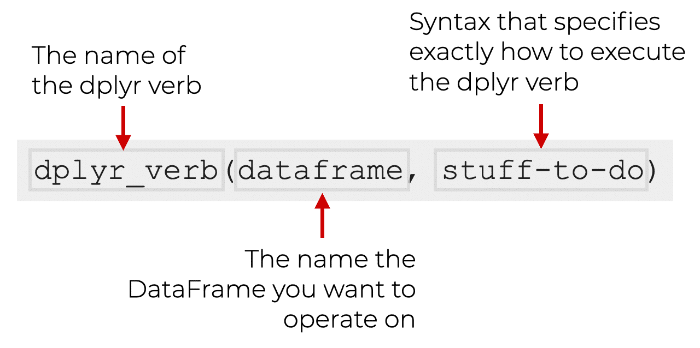

# First, we'll make a vector to play with
names <- c("rosalind", "marie", "barbara")Data Wrangling Basics
What is data wrangling?
Data wrangling, manipulation, or cleaning is the process of transforming data into a format that is more suitable for analysis. This can include removing missing values, changing the format of data, or combining multiple datasets.
There’s rarely a single way to approach any given data-wrangling problem! Expanding your “toolkit” allows you to tackle problems from different angles.
Measure twice, cut once
Before you begin wrangling data, you should be able to:
Define how you want the data to look and why
Document it well so that others (and future you!) know what you did
Know what tools you have and how to use them
Building a toolkit
Working with vectors
Pulling out specific parts of a data set is important when analyzing with R. Indexing, or accessing elements, subsets data based on numeric positions in a vector. Some things to be aware of when indexing:
Indexing uses brackets. i.e. the 5th element in a vector will be returned if you run
vector[5].It’s helpful for getting several elements at once, or reordering data.
Here are some examples:
# if we print the output, we'd get:
names[1] "rosalind" "marie" "barbara" # If we want to access the first name, we can use brackets and the position of the name in the vector:
names[1][1] "rosalind"# This works with any position, for example the third name:
names[3][1] "barbara"# You can index more than one position at a time too:
names[c(1,2)][1] "rosalind" "marie" # Changing the order of numbers you supply changes the order of names returned
names[c(2,1)][1] "marie" "rosalind"Working with data frames
This works for two-dimensional structures too, like data frames and matrices. We’d just format it as: dataframe[row,column]. Let’s try it out:
# Make a data frame
df <- data.frame(
name = c("Rosalind Franklin", "Marie Curie", "Barbara McClintock", "Ada Lovelace", "Dorothy Hodgkin",
"Lise Meitner", "Grace Hopper", "Chien-Shiung Wu", "Gerty Cori", "Katherine Johnson"),
field = c("DNA X-ray crystallography", "Radioactivity", "Genetics", "Computer Programming", "X-ray Crystallography",
"Nuclear Physics", "Computer Programming", "Experimental Physics", "Biochemistry", "Orbital Mechanics"),
school = c("Cambridge", "Sorbonne", "Cornell", "University of London", "Oxford",
"University of Berlin", "Yale", "Princeton", "Washington University", "West Virginia University"),
date_of_birth = c("1920-07-25", "1867-11-07", "1902-06-16", "1815-12-10", "1910-05-12",
"1878-11-07", "1906-12-09", "1912-05-31", "1896-08-15", "1918-08-26"),
working_region = c("Western Europe", "Western Europe", "North America", "Western Europe", "Western Europe", "Western Europe", "North America", "North America", "North America", "North America")
)
# To get the first row:
df[1,] name field school date_of_birth
1 Rosalind Franklin DNA X-ray crystallography Cambridge 1920-07-25
working_region
1 Western Europe# or the first column:
df[,1] [1] "Rosalind Franklin" "Marie Curie" "Barbara McClintock"
[4] "Ada Lovelace" "Dorothy Hodgkin" "Lise Meitner"
[7] "Grace Hopper" "Chien-Shiung Wu" "Gerty Cori"
[10] "Katherine Johnson" # for specific cells:
df[2,3][1] "Sorbonne"# We can use the column name instead of numbers:
df[2,"school"][1] "Sorbonne"# We can do the same thing by using a dollar sign:
df$name [1] "Rosalind Franklin" "Marie Curie" "Barbara McClintock"
[4] "Ada Lovelace" "Dorothy Hodgkin" "Lise Meitner"
[7] "Grace Hopper" "Chien-Shiung Wu" "Gerty Cori"
[10] "Katherine Johnson" # We can also give a list of columns
# which return in the order provided
df[,c("school","name")] school name
1 Cambridge Rosalind Franklin
2 Sorbonne Marie Curie
3 Cornell Barbara McClintock
4 University of London Ada Lovelace
5 Oxford Dorothy Hodgkin
6 University of Berlin Lise Meitner
7 Yale Grace Hopper
8 Princeton Chien-Shiung Wu
9 Washington University Gerty Cori
10 West Virginia University Katherine JohnsonStandard data formats and Tidy
That data, and most two-dimensional data sets (data frames, matrices, etc.) is often organized the similarly:
Each variable is its own column
Each observation is its own row
Each value is a single cell.

This follows the tidy data style, an approach to handling data in R that aims to be clear and readable.
Tidiest Universe
The bundle of tidy-associated packages is called the tidyverse, and it’s a hot-topic in the R world. Most data wrangling problems can be solved with tidy or base (default) R functions. This can lead to some headaches for beginners!
dplyr verbs
One of the most popular tidyverse packages, dplyr, offers a suite of helpful and readable functions for data manipulation. Let’s get started with how it can help you see your data:
dplyr::glimpse(df)Rows: 10
Columns: 5
$ name <chr> "Rosalind Franklin", "Marie Curie", "Barbara McClintock…
$ field <chr> "DNA X-ray crystallography", "Radioactivity", "Genetics…
$ school <chr> "Cambridge", "Sorbonne", "Cornell", "University of Lond…
$ date_of_birth <chr> "1920-07-25", "1867-11-07", "1902-06-16", "1815-12-10",…
$ working_region <chr> "Western Europe", "Western Europe", "North America", "W…With the glimpse function we see that this is a data frame with 3 observations and 3 variables. We can also see the type of each variable and the first few values.
Tip
dplyr functions have a lot in common:
The first argument is always a data frame
The following arguments typically specify which columns to operate on, using the variable names (without quotes)
The output is always a new data frame

The dplyr package has a set of functions called “verbs” that are used to manipulate data frames. These verbs can either act on rows (i.e. filter out specific row’s by some condition) or columns (i.e. select columns XYZ). There are also functions for working with groups (i.e. group rows by what values they have in a column with group_by)
The most important verbs that operate on rows of a dataset are filter(), which changes which rows are present without changing their order, and arrange(), which changes the order of the rows without changing which are present. Both functions only affect the rows, and the columns are left unchanged. We’ll also discuss distinct() which finds rows with unique values but unlike arrange() and filter() it can also optionally modify the columns.
filter allows you to keep rows based on the values of the columns. For example, to filter our data frame, df, by scientists who went to “Cambridge”, we would run:
df |>
filter(school == "Cambridge") name field school date_of_birth
1 Rosalind Franklin DNA X-ray crystallography Cambridge 1920-07-25
working_region
1 Western EuropeWe can also use filter to keep rows based on multiple conditions. For example, to filter our data frame, df, by scientists who went to “Cambridge” and were born after 1900, we would run:
df |>
filter(school == "Cambridge" & date_of_birth > "1900-01-01") name field school date_of_birth
1 Rosalind Franklin DNA X-ray crystallography Cambridge 1920-07-25
working_region
1 Western Europe
Note
It’s important to note that the & operator is used to combine conditions. If you want to use the or operator, you would use |.
The syntax == is used rather than = because == is used to compare values, while = is used to assign values. You can also use >=, <=, or != which mean greater than or equal to, less than or equal to, and not equal to, respectively.
The |> is a pipe operator that allows you to pass the output of one function to the next function. We will cover this soon!
arrange allows you to change the order of the rows based on the value of the columns.
df |>
arrange(date_of_birth) name field school
1 Ada Lovelace Computer Programming University of London
2 Marie Curie Radioactivity Sorbonne
3 Lise Meitner Nuclear Physics University of Berlin
4 Gerty Cori Biochemistry Washington University
5 Barbara McClintock Genetics Cornell
6 Grace Hopper Computer Programming Yale
7 Dorothy Hodgkin X-ray Crystallography Oxford
8 Chien-Shiung Wu Experimental Physics Princeton
9 Katherine Johnson Orbital Mechanics West Virginia University
10 Rosalind Franklin DNA X-ray crystallography Cambridge
date_of_birth working_region
1 1815-12-10 Western Europe
2 1867-11-07 Western Europe
3 1878-11-07 Western Europe
4 1896-08-15 North America
5 1902-06-16 North America
6 1906-12-09 North America
7 1910-05-12 Western Europe
8 1912-05-31 North America
9 1918-08-26 North America
10 1920-07-25 Western EuropeYou can use desc() on a column inside of arrange() to re-order the data frame based on that column in descending (big-to-small) order. For example:
df |>
arrange(desc(date_of_birth)) name field school
1 Rosalind Franklin DNA X-ray crystallography Cambridge
2 Katherine Johnson Orbital Mechanics West Virginia University
3 Chien-Shiung Wu Experimental Physics Princeton
4 Dorothy Hodgkin X-ray Crystallography Oxford
5 Grace Hopper Computer Programming Yale
6 Barbara McClintock Genetics Cornell
7 Gerty Cori Biochemistry Washington University
8 Lise Meitner Nuclear Physics University of Berlin
9 Marie Curie Radioactivity Sorbonne
10 Ada Lovelace Computer Programming University of London
date_of_birth working_region
1 1920-07-25 Western Europe
2 1918-08-26 North America
3 1912-05-31 North America
4 1910-05-12 Western Europe
5 1906-12-09 North America
6 1902-06-16 North America
7 1896-08-15 North America
8 1878-11-07 Western Europe
9 1867-11-07 Western Europe
10 1815-12-10 Western Europe
Note
The number of rows has not changed – we’re only arranging the data, we’re not filtering it.
distinct allows you to find all the unique rows in a data set, so in a technical sense, it primarily operates on the rows.
df |>
distinct(school) school
1 Cambridge
2 Sorbonne
3 Cornell
4 University of London
5 Oxford
6 University of Berlin
7 Yale
8 Princeton
9 Washington University
10 West Virginia UniversityAlternatively, if you want to the keep other columns when filtering for unique rows, you can use the .keep_all = TRUE option. For example:
df |>
distinct(school, .keep_all = TRUE) name field school
1 Rosalind Franklin DNA X-ray crystallography Cambridge
2 Marie Curie Radioactivity Sorbonne
3 Barbara McClintock Genetics Cornell
4 Ada Lovelace Computer Programming University of London
5 Dorothy Hodgkin X-ray Crystallography Oxford
6 Lise Meitner Nuclear Physics University of Berlin
7 Grace Hopper Computer Programming Yale
8 Chien-Shiung Wu Experimental Physics Princeton
9 Gerty Cori Biochemistry Washington University
10 Katherine Johnson Orbital Mechanics West Virginia University
date_of_birth working_region
1 1920-07-25 Western Europe
2 1867-11-07 Western Europe
3 1902-06-16 North America
4 1815-12-10 Western Europe
5 1910-05-12 Western Europe
6 1878-11-07 Western Europe
7 1906-12-09 North America
8 1912-05-31 North America
9 1896-08-15 North America
10 1918-08-26 North AmericaIf you want to find the number of occurrences instead, you’re better off swapping distinct() for count(), and with the sort = TRUE argument you can arrange them in descending order of number of occurrences.
df |>
count(school, sort = TRUE) school n
1 Cambridge 1
2 Cornell 1
3 Oxford 1
4 Princeton 1
5 Sorbonne 1
6 University of Berlin 1
7 University of London 1
8 Washington University 1
9 West Virginia University 1
10 Yale 1There are four important verbs that affect the columns without changing the rows: mutate() creates new columns that are derived from the existing columns, select() changes which columns are present, rename() changes the names of the columns, and relocate() changes the positions of the columns.
mutate allows you to to add new columns that are calculated from the existing columns. For example, let’s add a new column to our df to showcase this:
df$rate_out_of_10 <- 10
df |>
mutate(rate_out_of_10 = rate_out_of_10 + 1) name field school
1 Rosalind Franklin DNA X-ray crystallography Cambridge
2 Marie Curie Radioactivity Sorbonne
3 Barbara McClintock Genetics Cornell
4 Ada Lovelace Computer Programming University of London
5 Dorothy Hodgkin X-ray Crystallography Oxford
6 Lise Meitner Nuclear Physics University of Berlin
7 Grace Hopper Computer Programming Yale
8 Chien-Shiung Wu Experimental Physics Princeton
9 Gerty Cori Biochemistry Washington University
10 Katherine Johnson Orbital Mechanics West Virginia University
date_of_birth working_region rate_out_of_10
1 1920-07-25 Western Europe 11
2 1867-11-07 Western Europe 11
3 1902-06-16 North America 11
4 1815-12-10 Western Europe 11
5 1910-05-12 Western Europe 11
6 1878-11-07 Western Europe 11
7 1906-12-09 North America 11
8 1912-05-31 North America 11
9 1896-08-15 North America 11
10 1918-08-26 North America 11select allows you to focus on the variables you’re interested in and rapidly zoom in on a useful subset using operations based on the names of the variables:
You can select columns by name:
df |>
select(name, date_of_birth, school) name date_of_birth school
1 Rosalind Franklin 1920-07-25 Cambridge
2 Marie Curie 1867-11-07 Sorbonne
3 Barbara McClintock 1902-06-16 Cornell
4 Ada Lovelace 1815-12-10 University of London
5 Dorothy Hodgkin 1910-05-12 Oxford
6 Lise Meitner 1878-11-07 University of Berlin
7 Grace Hopper 1906-12-09 Yale
8 Chien-Shiung Wu 1912-05-31 Princeton
9 Gerty Cori 1896-08-15 Washington University
10 Katherine Johnson 1918-08-26 West Virginia UniversityYou can select columns between name and date_of_birth:
df |>
select(name:date_of_birth) name field school
1 Rosalind Franklin DNA X-ray crystallography Cambridge
2 Marie Curie Radioactivity Sorbonne
3 Barbara McClintock Genetics Cornell
4 Ada Lovelace Computer Programming University of London
5 Dorothy Hodgkin X-ray Crystallography Oxford
6 Lise Meitner Nuclear Physics University of Berlin
7 Grace Hopper Computer Programming Yale
8 Chien-Shiung Wu Experimental Physics Princeton
9 Gerty Cori Biochemistry Washington University
10 Katherine Johnson Orbital Mechanics West Virginia University
date_of_birth
1 1920-07-25
2 1867-11-07
3 1902-06-16
4 1815-12-10
5 1910-05-12
6 1878-11-07
7 1906-12-09
8 1912-05-31
9 1896-08-15
10 1918-08-26Finally, you can even select all columns that are characters:
df |>
select(where(is.character)) name field school
1 Rosalind Franklin DNA X-ray crystallography Cambridge
2 Marie Curie Radioactivity Sorbonne
3 Barbara McClintock Genetics Cornell
4 Ada Lovelace Computer Programming University of London
5 Dorothy Hodgkin X-ray Crystallography Oxford
6 Lise Meitner Nuclear Physics University of Berlin
7 Grace Hopper Computer Programming Yale
8 Chien-Shiung Wu Experimental Physics Princeton
9 Gerty Cori Biochemistry Washington University
10 Katherine Johnson Orbital Mechanics West Virginia University
date_of_birth working_region
1 1920-07-25 Western Europe
2 1867-11-07 Western Europe
3 1902-06-16 North America
4 1815-12-10 Western Europe
5 1910-05-12 Western Europe
6 1878-11-07 Western Europe
7 1906-12-09 North America
8 1912-05-31 North America
9 1896-08-15 North America
10 1918-08-26 North America
Tip
There are a number of helper functions you can use within select():
starts_with("abc"): matches names that begin with “abc”.
ends_with("xyz"): matches names that end with “xyz”.
contains("ijk"): matches names that contain “ijk”.
num_range("x", 1:3): matches x1, x2 and x3.
You can rename variables as you select() them by using =. The new name appears on the left hand side of the =, and the old variable appears on the right hand side:
df |>
select(full_name = name, dob = date_of_birth) full_name dob
1 Rosalind Franklin 1920-07-25
2 Marie Curie 1867-11-07
3 Barbara McClintock 1902-06-16
4 Ada Lovelace 1815-12-10
5 Dorothy Hodgkin 1910-05-12
6 Lise Meitner 1878-11-07
7 Grace Hopper 1906-12-09
8 Chien-Shiung Wu 1912-05-31
9 Gerty Cori 1896-08-15
10 Katherine Johnson 1918-08-26You can select all columns except those from name to date_of_birth:
df |>
select(-c(name:date_of_birth)) working_region rate_out_of_10
1 Western Europe 10
2 Western Europe 10
3 North America 10
4 Western Europe 10
5 Western Europe 10
6 Western Europe 10
7 North America 10
8 North America 10
9 North America 10
10 North America 10## or
df |>
select(!name:date_of_birth) working_region rate_out_of_10
1 Western Europe 10
2 Western Europe 10
3 North America 10
4 Western Europe 10
5 Western Europe 10
6 Western Europe 10
7 North America 10
8 North America 10
9 North America 10
10 North America 10If you want to keep all the existing variables and just want to rename a few, you can use rename() instead of select()
df |>
rename(full_name = name, dob = date_of_birth) full_name field school
1 Rosalind Franklin DNA X-ray crystallography Cambridge
2 Marie Curie Radioactivity Sorbonne
3 Barbara McClintock Genetics Cornell
4 Ada Lovelace Computer Programming University of London
5 Dorothy Hodgkin X-ray Crystallography Oxford
6 Lise Meitner Nuclear Physics University of Berlin
7 Grace Hopper Computer Programming Yale
8 Chien-Shiung Wu Experimental Physics Princeton
9 Gerty Cori Biochemistry Washington University
10 Katherine Johnson Orbital Mechanics West Virginia University
dob working_region rate_out_of_10
1 1920-07-25 Western Europe 10
2 1867-11-07 Western Europe 10
3 1902-06-16 North America 10
4 1815-12-10 Western Europe 10
5 1910-05-12 Western Europe 10
6 1878-11-07 Western Europe 10
7 1906-12-09 North America 10
8 1912-05-31 North America 10
9 1896-08-15 North America 10
10 1918-08-26 North America 10relocate allows you to move variables around. You might want to collect related variables together or move important variables to the front. By default relocate() moves variables to the front:
df |>
relocate(date_of_birth) date_of_birth name field
1 1920-07-25 Rosalind Franklin DNA X-ray crystallography
2 1867-11-07 Marie Curie Radioactivity
3 1902-06-16 Barbara McClintock Genetics
4 1815-12-10 Ada Lovelace Computer Programming
5 1910-05-12 Dorothy Hodgkin X-ray Crystallography
6 1878-11-07 Lise Meitner Nuclear Physics
7 1906-12-09 Grace Hopper Computer Programming
8 1912-05-31 Chien-Shiung Wu Experimental Physics
9 1896-08-15 Gerty Cori Biochemistry
10 1918-08-26 Katherine Johnson Orbital Mechanics
school working_region rate_out_of_10
1 Cambridge Western Europe 10
2 Sorbonne Western Europe 10
3 Cornell North America 10
4 University of London Western Europe 10
5 Oxford Western Europe 10
6 University of Berlin Western Europe 10
7 Yale North America 10
8 Princeton North America 10
9 Washington University North America 10
10 West Virginia University North America 10You can also specify where to put them using the .before and .after arguments, just like in mutate():
df |>
relocate(date_of_birth, .after = name) name date_of_birth field
1 Rosalind Franklin 1920-07-25 DNA X-ray crystallography
2 Marie Curie 1867-11-07 Radioactivity
3 Barbara McClintock 1902-06-16 Genetics
4 Ada Lovelace 1815-12-10 Computer Programming
5 Dorothy Hodgkin 1910-05-12 X-ray Crystallography
6 Lise Meitner 1878-11-07 Nuclear Physics
7 Grace Hopper 1906-12-09 Computer Programming
8 Chien-Shiung Wu 1912-05-31 Experimental Physics
9 Gerty Cori 1896-08-15 Biochemistry
10 Katherine Johnson 1918-08-26 Orbital Mechanics
school working_region rate_out_of_10
1 Cambridge Western Europe 10
2 Sorbonne Western Europe 10
3 Cornell North America 10
4 University of London Western Europe 10
5 Oxford Western Europe 10
6 University of Berlin Western Europe 10
7 Yale North America 10
8 Princeton North America 10
9 Washington University North America 10
10 West Virginia University North America 10group_by allows you to create groups using more than one variable.
df |>
group_by(school, working_region)# A tibble: 10 × 6
# Groups: school, working_region [10]
name field school date_of_birth working_region rate_out_of_10
<chr> <chr> <chr> <chr> <chr> <dbl>
1 Rosalind Franklin DNA X-… Cambr… 1920-07-25 Western Europe 10
2 Marie Curie Radioa… Sorbo… 1867-11-07 Western Europe 10
3 Barbara McClintock Geneti… Corne… 1902-06-16 North America 10
4 Ada Lovelace Comput… Unive… 1815-12-10 Western Europe 10
5 Dorothy Hodgkin X-ray … Oxford 1910-05-12 Western Europe 10
6 Lise Meitner Nuclea… Unive… 1878-11-07 Western Europe 10
7 Grace Hopper Comput… Yale 1906-12-09 North America 10
8 Chien-Shiung Wu Experi… Princ… 1912-05-31 North America 10
9 Gerty Cori Bioche… Washi… 1896-08-15 North America 10
10 Katherine Johnson Orbita… West … 1918-08-26 North America 10summarize allows you to…
df |>
summarize(mean_rate = mean(rate_out_of_10)) mean_rate
1 10The slice family of functions allows you to…
df |>
slice(1:5) name field school
1 Rosalind Franklin DNA X-ray crystallography Cambridge
2 Marie Curie Radioactivity Sorbonne
3 Barbara McClintock Genetics Cornell
4 Ada Lovelace Computer Programming University of London
5 Dorothy Hodgkin X-ray Crystallography Oxford
date_of_birth working_region rate_out_of_10
1 1920-07-25 Western Europe 10
2 1867-11-07 Western Europe 10
3 1902-06-16 North America 10
4 1815-12-10 Western Europe 10
5 1910-05-12 Western Europe 10ungroup allows you to remove grouping from a data frame without using summarize()
df |>
ungroup() name field school
1 Rosalind Franklin DNA X-ray crystallography Cambridge
2 Marie Curie Radioactivity Sorbonne
3 Barbara McClintock Genetics Cornell
4 Ada Lovelace Computer Programming University of London
5 Dorothy Hodgkin X-ray Crystallography Oxford
6 Lise Meitner Nuclear Physics University of Berlin
7 Grace Hopper Computer Programming Yale
8 Chien-Shiung Wu Experimental Physics Princeton
9 Gerty Cori Biochemistry Washington University
10 Katherine Johnson Orbital Mechanics West Virginia University
date_of_birth working_region rate_out_of_10
1 1920-07-25 Western Europe 10
2 1867-11-07 Western Europe 10
3 1902-06-16 North America 10
4 1815-12-10 Western Europe 10
5 1910-05-12 Western Europe 10
6 1878-11-07 Western Europe 10
7 1906-12-09 North America 10
8 1912-05-31 North America 10
9 1896-08-15 North America 10
10 1918-08-26 North America 10dplyr verbs work great as a team!
df |>
filter(date_of_birth > "1900-01-01") |>
arrange(date_of_birth) |>
select(name, date_of_birth) name date_of_birth
1 Barbara McClintock 1902-06-16
2 Grace Hopper 1906-12-09
3 Dorothy Hodgkin 1910-05-12
4 Chien-Shiung Wu 1912-05-31
5 Katherine Johnson 1918-08-26
6 Rosalind Franklin 1920-07-25Although these were basic examples, hopefully you feel a little more confident about working with vectors, and data frames using dplyr verbs to clean and manipulate data. Happy Wrangling!
Functions on functions
An introduction to pipes
Data scientists often want to make many changes to their data at one time. Typically, this means using more than one function at once. However, the way we’ve been writing our scripts so far would make for some very confusing looking code.
For example, let’s use dplyr functions to perform two operations on our data set of scientists: filter for those born after 1900 and then arrange them by date of birth.
Here we first filter and then arrange. Note that we are creating an intermediate variable in between the steps.
# Filtering for scientists born after 1900
filtered_data <- filter(df, as.Date(date_of_birth) > as.Date("1900-01-01"))
# Arranging the filtered data by date of birth
arranged_data <- arrange(filtered_data, date_of_birth)We can do the same thing without creating an intermediate variable. It’s more compact but can start to get confusing if we add more functions.
arranged_data <- arrange(filter(df, as.Date(date_of_birth) > as.Date("1900-01-01")), date_of_birth)The pipe operator, |>, is a tool that can help make the script more readable. It allows us to pass the result of one function directly into the next. Think of it as saying, “and then..”
Let’s dissect our goal: filter for those born after 1900 and then arrange them by date of birth.
filter is doing the filter for… part
arrange is doing the arrange them… part
and the pipe, |>, is going to do the and then… part
# Using pipes
arranged_data <- df |>
filter(as.Date(date_of_birth) > as.Date("1900-01-01")) |>
arrange(date_of_birth)Once you’re comfortable with this style, you should be able to read it as: Take data and then filter by DoB and then arrange by DoB. This helps keep our code both clean and readable.
Tip
There are two pipe operators: |> and %>%. They work almost the exact same way. %>% is from the magrittr package and was the only way to pipe before version R 4.1.0. The only major difference is that %>% can specify which argument of the next function you want to pipe into.
data |> function(argument_A, argument_B) can only do function(argument_A = data, argument_B)
With %>% you can choose the argument with a period, .: data %>% function(argument_A, argument_B = .)
Case Study Introduction
A lot of people struggle to learn how to code without having an application. Since this course is geared towards biomedical sciences, we thought you might find it easier if we work through an actual research data set.
For this example, we have some data from an experiment that measured the proportions of different cell times within mouse cardiac tissue. These samples are from treatment vs. control and WT vs. mutant.
What are some things that we, as researchers, would want to know about our data?
- Did the experiment work?
Things to consider:
Check your controls or expected features!
- Do we see differences between our experimental groups?
To get at these questions, we need to be able to manipulate our data into the formats needed to check those features and for plotting. To start, lets take a look at how the results are structured before we start planning how to do the processing.
Getting familiar with the data
options(digits = 3)
# Load the data. The sample IDs were stored as the first row, so lets make those the row.names
cell_props <- read.csv("wrangling-files/cellProportions.csv",
row.names = 1)
head(cell_props) Cardiomyocytes Fibroblast Endothelial.Cells Macrophage
whole_2 0.652 0.0886 0.06700 0.1761
fraction_13 0.824 0.0370 0.06387 0.0692
fraction_12 0.895 0.0213 0.04436 0.0390
fraction_19 0.000 0.9983 0.00167 0.0000
fraction_18 0.000 1.0000 0.00000 0.0000
whole_16 0.820 0.0208 0.08889 0.0501
Pericytes.SMC
whole_2 0.01672
fraction_13 0.00558
fraction_12 0.00000
fraction_19 0.00000
fraction_18 0.00000
whole_16 0.02058
Whole vs. Fractions
Fraction samples are our controls. They are supposed to be almost completely one single cell type. They’re just here to make sure we accurately measured cell type proportions.
Whole samples are our test samples. They’re from the treatment/control mice, which you’d expect to have a range of cell types.
Analysis Goals
For next class, you should brainstorm some ideas for how to approach the analysis. Try to consider these angles:
- What do we want to know about this data set?
- What kind of visuals would we want to make to check that?
- What would the data need to look like to get those visuals?
- How does the data look now?
- Which functions might we use to get the data from it’s current state to what we need for plotting?
In the beginning of next class, we’ll chat about what ideas you had!
(Ambitious students who want to try before then will also need the phenotype data located at wrangling-files/cellPhenotypes.csv)